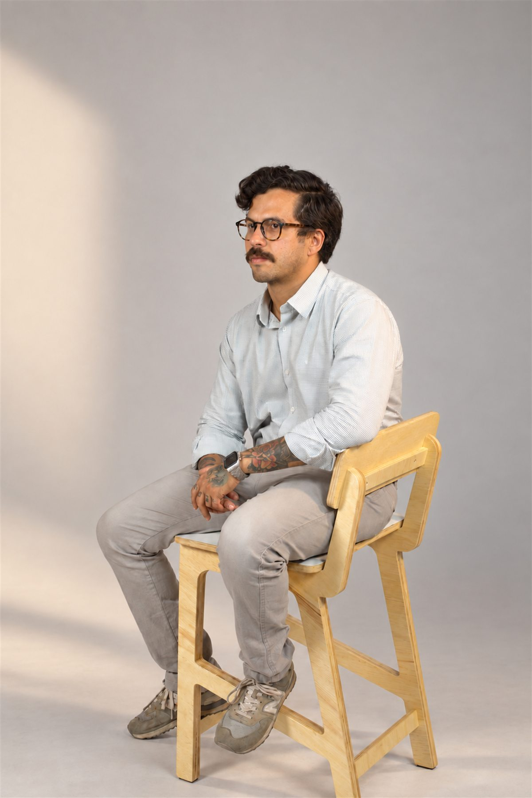
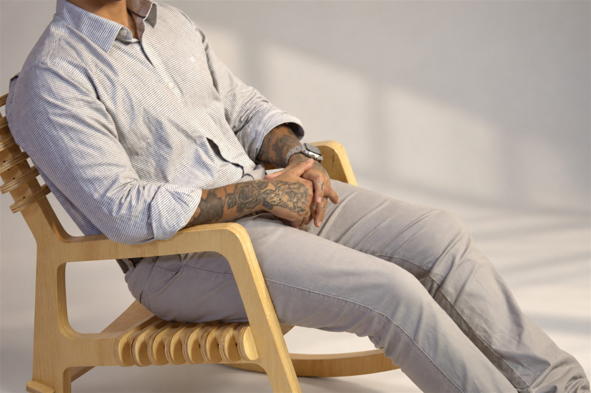
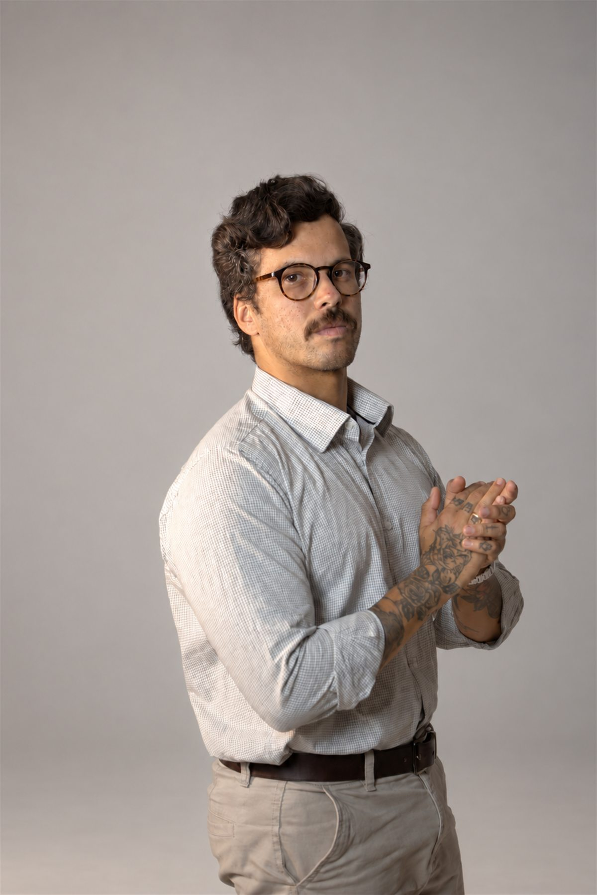
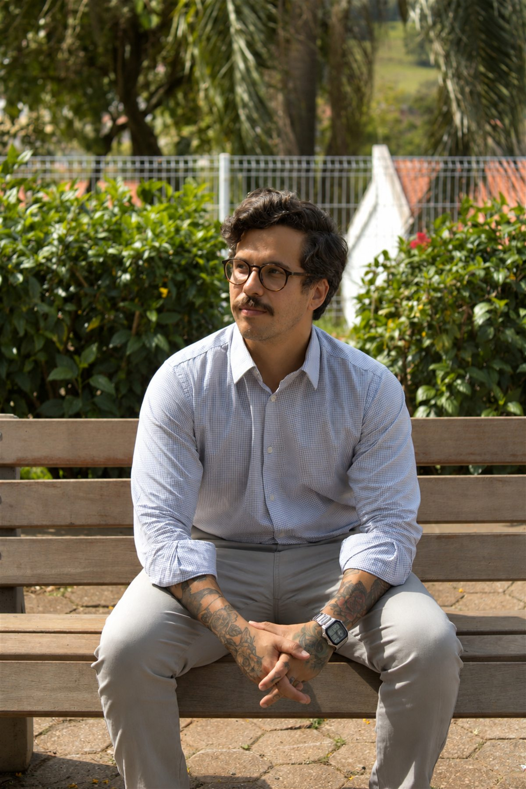
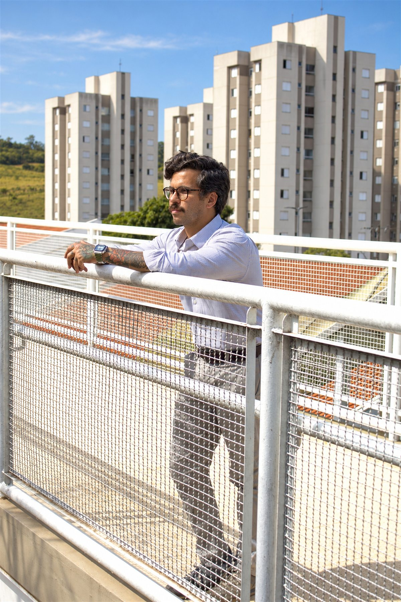
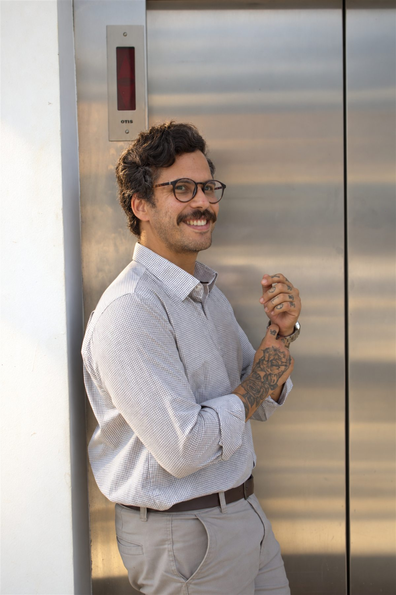
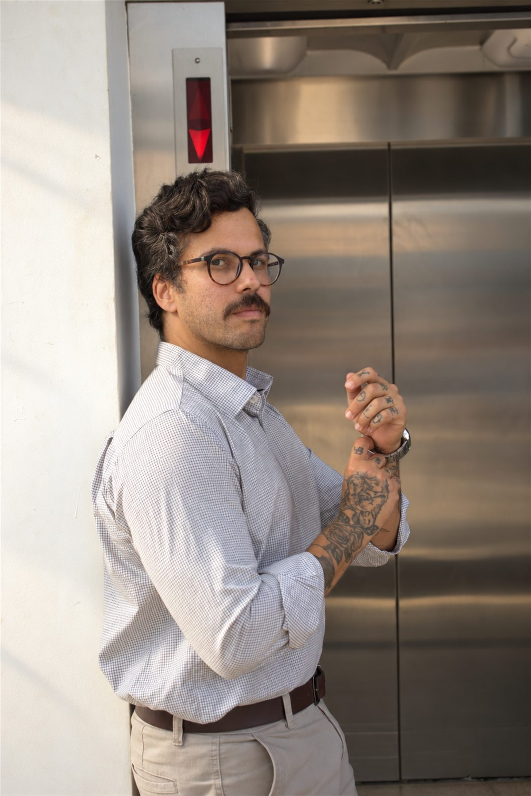

VISUALIZE ARCHIVE · PORTRAIT SERIES
THE
LUCAS
um estudo sobre presença,
gesto e luz natural.







ARCHIVE
2026
01 / NOTAS DO ENSAIO
“O retrato começa
quando a pose termina.”
luz suave
silêncio
um gesto de cada vez.
silêncio
um gesto de cada vez.
02 / ARQUIVO COMPLETO
40 fotografias · estúdio & exterior
PROOF
SHEET
Selecione um framepara ampliar.